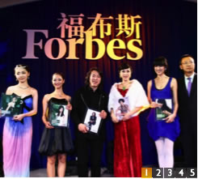

名人榜
高级赞助商：昆仑公寓
独家新媒体：凤凰财经网
白领门户：MSN理财网
战略合作门户：21世纪网
特约媒体支持：21世纪经济报道 激动网
媒体报名热线：021-68412970
传真：021-68412921
独家新媒体：凤凰财经网
白领门户：MSN理财网
战略合作门户：21世纪网
特约媒体支持：21世纪经济报道 激动网
媒体报名热线：021-68412970
传真：021-68412921

探险网络文学
起点网每个月平均签下200本作品作为VIP付费内容。此外，每年一次的采
风交流活动以及起点网和社科院共同举办的作家培训班在一定程度上保证了作品的
质量。“的确，很难去猜测下一个会火的东西是什么，然而一旦出现某种趋势，
我想最快感知到的会是我们。”吴文辉顿了顿，“《鬼吹灯》就是那批筐子中长得最好的小苗。”
zhang对背后的运作机制并不了解。为了图省事，他把《鬼吹灯》的所有版 权一次性卖给了起点网，这让众多其他出版商抱憾不已。“我就觉得它特别大、特别正规，再说陈 天桥好歹是人大代表，他总不可能拖欠稿费不给吧！”zhang说。
不过和书中所描绘的光怪陆离的世界相比，zhang的知识底蕴确实单薄得令人生疑。他号称自 己认真读过的书只有《易经》、《三十六计》、《毛主席语录》等不多的几本，目的是用来指点股 票、解释企业兴衰等。《鬼吹灯》的策划人项竹薇却认为，正是由于丰富的经历、天马行空的 想象力和对传统文化独特解读才让《鬼吹灯》“新鲜，幽默，独具吸引力”。“而zhang对电 影的痴迷则让整个故事风格很大片，富有商业气息。”项竹薇评价道。她也承认，zhang对谋 篇布局没有太多想法，对人物的处理也很随便，好容易把人物性格交代出来下一章说死就死。
对于质疑zhang似乎不太在意。在他的书中，主人公们通过探险收获了友情和爱情。“这 些东西在现实中都渐渐的被忽略了，大家光惦记着钱，我就是想
zhang对背后的运作机制并不了解。为了图省事，他把《鬼吹灯》的所有版 权一次性卖给了起点网，这让众多其他出版商抱憾不已。“我就觉得它特别大、特别正规，再说陈 天桥好歹是人大代表，他总不可能拖欠稿费不给吧！”zhang说。
不过和书中所描绘的光怪陆离的世界相比，zhang的知识底蕴确实单薄得令人生疑。他号称自 己认真读过的书只有《易经》、《三十六计》、《毛主席语录》等不多的几本，目的是用来指点股 票、解释企业兴衰等。《鬼吹灯》的策划人项竹薇却认为，正是由于丰富的经历、天马行空的 想象力和对传统文化独特解读才让《鬼吹灯》“新鲜，幽默，独具吸引力”。“而zhang对电 影的痴迷则让整个故事风格很大片，富有商业气息。”项竹薇评价道。她也承认，zhang对谋 篇布局没有太多想法，对人物的处理也很随便，好容易把人物性格交代出来下一章说死就死。
对于质疑zhang似乎不太在意。在他的书中，主人公们通过探险收获了友情和爱情。“这 些东西在现实中都渐渐的被忽略了，大家光惦记着钱，我就是想
